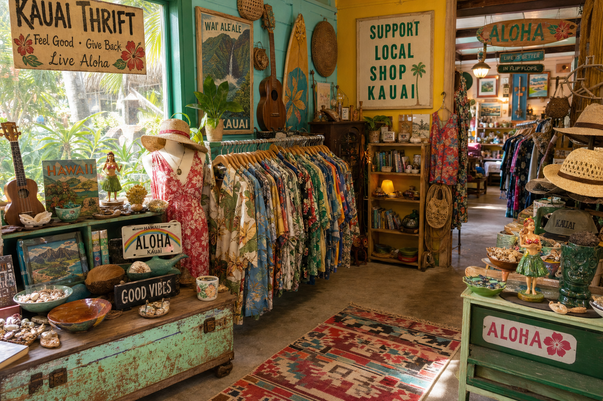

Kauai is known as Hawaii's most unspoiled island, and the same spirit of discovery that draws visitors to its hidden beaches and jungle valleys extends to its thrift shops. Shopping secondhand on Kauai isn't just budget-friendly — it's genuinely one of the best ways to find authentic pieces of island culture, history, and style.
The Best Areas to Thrift on Kauai
Hanapepe, on the south shore, is ground zero for secondhand shopping on Kauai. This small town has become an arts and culture hub, and its collection of thrift stores, antique dealers, and estate sale shops reflects that creative energy. Lihue, the island's capital, has several large thrift stores including Goodwill and the Salvation Army Family Store — larger selections but less curated.
When to Visit for the Best Finds
The secret to great thrift shopping is timing. Most shops receive their freshest inventory mid-week, after weekend estate pickups. At Second Wave, our big restocking days are Tuesday and Friday mornings — we put out new items as we process them throughout the day. If you're planning a Kauai vacation and want first pick at new arrivals, aim to visit on a Tuesday or Friday.
Hanapepe Art Night — The Perfect Combination
If you're visiting on a Friday, plan your evening around Hanapepe Art Night (every Friday, 6–9 PM). The galleries open late, artists set up along the main street, and the whole town comes alive. We stay open until 9 PM on Fridays, and the combination of gallery hopping and thrift browsing makes for an unforgettable evening. It's one of the most charming events in all of Hawaii.
What to Look For
Kauai thrift shops are particularly good for: vintage aloha wear (shirts, muumuus, and resort wear from the 1960s–1980s are common finds), Hawaiian ceramics and collectibles, vintage Hawaii travel posters and photography, locally made crafts and jewelry donated by artists, and natural fiber furniture (rattan, wicker, bamboo) that's difficult to find on the mainland.
Packing Tips
If you're flying in, bring a collapsible bag or purchase one at the shop for your finds. Vintage aloha shirts pack beautifully and make the best souvenirs money can't buy — your friends will be amazed you found a 1970s Reyn Spooner for $18. For larger items like furniture, we can arrange local shipping or coordinate pickup with your vacation rental.